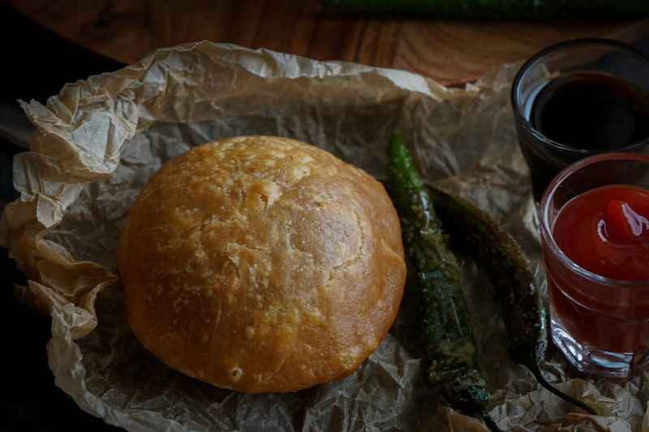

Kachori
Rajasthan

Kachori is a popular snack from Rajasthan that has captured the taste buds of food lovers across India. These round, flaky pastries are deep-fried to golden perfection and filled with a spicy mixture of moong dal, peas, or other lentils seasoned with aromatic spices. The crispy outer layer gives way to a flavorful, slightly tangy filling that creates an explosion of taste in every bite. Typically served with tamarind chutney or aloo sabzi (potato curry), kachoris are a favorite breakfast or evening snack in Rajasthan and beyond.